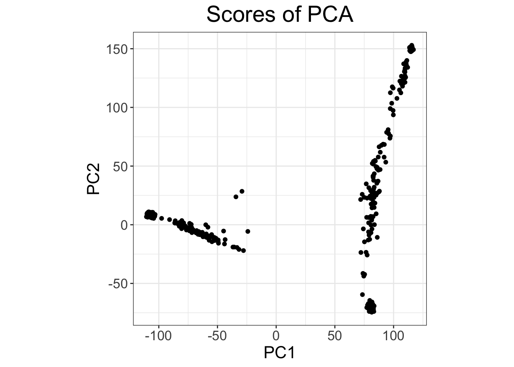
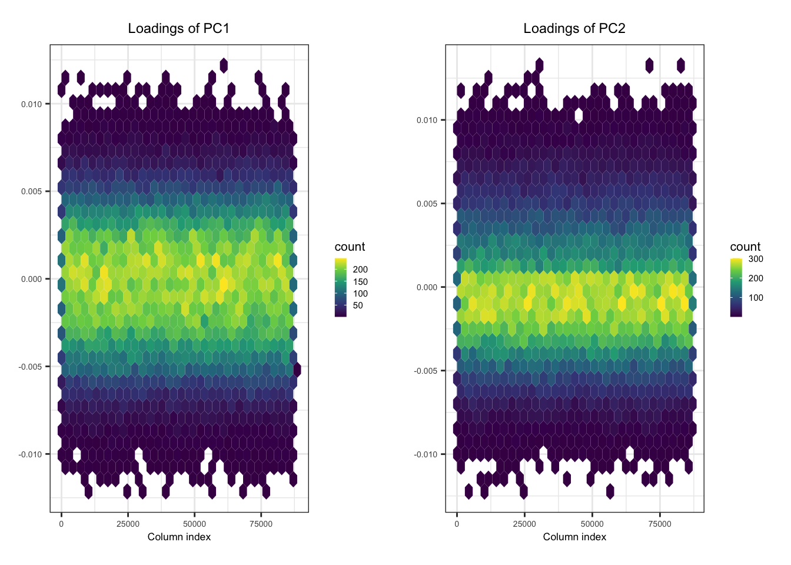

Last updated: 2025-06-01
Checks: 6 1
Knit directory:
SISG2025_Association_Mapping/
This reproducible R Markdown analysis was created with workflowr (version 1.7.0). The Checks tab describes the reproducibility checks that were applied when the results were created. The Past versions tab lists the development history.
The R Markdown is untracked by Git. To know which version of the R
Markdown file created these results, you’ll want to first commit it to
the Git repo. If you’re still working on the analysis, you can ignore
this warning. When you’re finished, you can run
wflow_publish to commit the R Markdown file and build the
HTML.
Great job! The global environment was empty. Objects defined in the global environment can affect the analysis in your R Markdown file in unknown ways. For reproduciblity it’s best to always run the code in an empty environment.
The command set.seed(20230530) was run prior to running
the code in the R Markdown file. Setting a seed ensures that any results
that rely on randomness, e.g. subsampling or permutations, are
reproducible.
Great job! Recording the operating system, R version, and package versions is critical for reproducibility.
Nice! There were no cached chunks for this analysis, so you can be confident that you successfully produced the results during this run.
Great job! Using relative paths to the files within your workflowr project makes it easier to run your code on other machines.
Great! You are using Git for version control. Tracking code development and connecting the code version to the results is critical for reproducibility.
The results in this page were generated with repository version 421fcd0. See the Past versions tab to see a history of the changes made to the R Markdown and HTML files.
Note that you need to be careful to ensure that all relevant files for
the analysis have been committed to Git prior to generating the results
(you can use wflow_publish or
wflow_git_commit). workflowr only checks the R Markdown
file, but you know if there are other scripts or data files that it
depends on. Below is the status of the Git repository when the results
were generated:
Ignored files:
Ignored: .DS_Store
Ignored: .qodo/
Ignored: analysis/.DS_Store
Ignored: data/run_regenie.r
Ignored: data/sim_rels_geno.bed
Ignored: exe/
Ignored: ldRef.log
Ignored: lectures/
Ignored: mk_website.R
Ignored: notes.txt
Ignored: test1.log
Ignored: test2.log
Ignored: test3.log
Ignored: test4.log
Ignored: tmp/
Untracked files:
Untracked: .mk_website.R.swp
Untracked: GWAS.ma
Untracked: _workflowr.yml
Untracked: analysis/.index.Rmd.swp
Untracked: analysis/QG3_Association_Testing_practical_Key.Rmd
Untracked: analysis/QG3_Beyond_Standard_GWAS_practical_Key.Rmd
Untracked: analysis/QG3_CC_Imbalance_practical_Key.Rmd
Untracked: analysis/QG3_Downstream-Analyses_practical_Key.Rmd
Untracked: analysis/QG3_Plink_Population_Structure_practical_Key.Rmd
Untracked: analysis/QG3_Polygenic_Scores_practical_Key.Rmd
Untracked: analysis/QG3_Power-Design_practical_Key.Rmd
Untracked: analysis/QG3_RV_tests_practical_Key.Rmd
Untracked: analysis/QG3_Relatedness_REGENIE_practical_Key.Rmd
Untracked: causals.snplist
Untracked: ldRef.bed
Untracked: ldRef.bim
Untracked: ldRef.fam
Untracked: ldRef.map
Untracked: ldRef.ped
Untracked: sim.config
Untracked: test1.cma.cojo
Untracked: test1.jma.cojo
Untracked: test1.ldr.cojo
Untracked: test2.cma.cojo
Untracked: test2.jma.cojo
Untracked: test2.ldr.cojo
Untracked: test3.cma.cojo
Untracked: test3.jma.cojo
Untracked: test3.ldr.cojo
Untracked: test4.cma.cojo
Untracked: test4.jma.cojo
Untracked: test4.ldr.cojo
Unstaged changes:
Modified: analysis/QG3_Downstream-Analyses_practical.Rmd
Modified: analysis/_site.yml
Note that any generated files, e.g. HTML, png, CSS, etc., are not included in this status report because it is ok for generated content to have uncommitted changes.
There are no past versions. Publish this analysis with
wflow_publish() to start tracking its development.
Before you begin:
library(data.table)
library(dplyr)
library(bigsnpr)
library(ggplot2)We will be working with a subset of the genotype data from the Human Genome Diversity Panel (HGDP) and HapMap.
The file “YRI_CEU_ASW_MEX_NAM.bed” is a binary file in PLINK BED format with accompanying BIM and FAM files. It contains the genotype data at autosomal SNPs (i.e. chromosomes 1-22) for:
File with ancestry labels assignment for each sample: Population_Sample_Info.txt
Let’s first load the HGDP data into the R session. We need to define the path to the directory containing the PLINK BED and the ancestry label files (change the path to the file location).
# change this to the directory on your machine
HGDP_dir <- "/SISGM19/data/" Also specify the path to the PLINK2 binary
plink2_binary <- "/SISGM19/bin/plink2" We can now read the PLINK BED and FAM files (recall the BED file is a binary file):
HGDP_bim <- fread(sprintf("%s/YRI_CEU_ASW_MEX_NAM.bim", HGDP_dir), header = FALSE)
head(HGDP_bim, 3) V1 V2 V3 V4 V5 V6
1: 1 rs9442372 0 1008567 1 2
2: 1 rs2887286 0 1145994 1 2
3: 1 rs3813199 0 1148140 1 2HGDP_fam <- fread(sprintf("%s/YRI_CEU_ASW_MEX_NAM.fam", HGDP_dir), header = FALSE)
head(HGDP_fam, 3) V1 V2 V3 V4 V5 V6
1: 1432 HGDP00702 0 0 2 -9
2: 1433 HGDP00703 0 0 1 -9
3: 1434 HGDP00704 0 0 2 -9When reading the ancestry label file, we need to make sure the order of samples matches that in the PLINK data:
HGDP_ancestry_df <- fread(sprintf("%s/Population_Sample_Info.txt", HGDP_dir))
HGDP_ancestry_df <- left_join(HGDP_fam[,c("V1","V2")], HGDP_ancestry_df, by = c("V1" = "FID", "V2" = "IID"))
head(HGDP_ancestry_df, 3) V1 V2 Population
1: 1432 HGDP00702 NAM
2: 1433 HGDP00703 NAM
3: 1434 HGDP00704 NAMHere are some things to look at:
str(HGDP_fam)Classes 'data.table' and 'data.frame': 604 obs. of 6 variables:
$ V1: chr "1432" "1433" "1434" "1436" ...
$ V2: chr "HGDP00702" "HGDP00703" "HGDP00704" "HGDP00706" ...
$ V3: chr "0" "0" "0" "0" ...
$ V4: chr "0" "0" "0" "0" ...
$ V5: int 2 1 2 2 2 1 2 1 2 1 ...
$ V6: int -9 -9 -9 -9 -9 -9 -9 -9 -9 -9 ...
- attr(*, ".internal.selfref")=<externalptr> str(HGDP_bim)Classes 'data.table' and 'data.frame': 150872 obs. of 6 variables:
$ V1: int 1 1 1 1 1 1 1 1 1 1 ...
$ V2: chr "rs9442372" "rs2887286" "rs3813199" "rs6685064" ...
$ V3: int 0 0 0 0 0 0 0 0 0 0 ...
$ V4: int 1008567 1145994 1148140 1201155 1452629 1878053 2013924 2023116 2072349 2072426 ...
$ V5: int 1 1 1 1 1 1 1 1 1 1 ...
$ V6: int 2 2 2 2 2 2 2 2 2 2 ...
- attr(*, ".internal.selfref")=<externalptr> table(HGDP_ancestry_df$Population)
ASW CEU MXL NAM YRI
87 165 86 63 203 cmd <- sprintf("%s --bfile %s/YRI_CEU_ASW_MEX_NAM --pca 10 --out pca_plink", plink2_binary, HGDP_dir)
system(cmd)This generates two files pca_plink.eigenvec containing
the PCs (eigenvectors), and pca_plink.eigenval containing
the top eigenvalues.
PC_df <- left_join(HGDP_ancestry_df, fread("pca_plink.eigenvec"), by = c("V1" = "#FID", "V2" = "IID"))
ggplot(PC_df, aes(x=PC1, y=PC2, color = Population)) +
geom_point()Interpret the first two PCs, what ancestries are they reflecting?
Read in the eigenvalues and make a scree plot corresponding for these first 10 PCs. Estimate the proportion of variance explained by the first two PCs.
eigenvalues_df <- fread("pca_plink.eigenval", header = FALSE)
ggplot(eigenvalues_df, aes(x = 1:10, y = V1)) +
geom_point() +
geom_line() +
scale_x_continuous(breaks = 1:10) +
labs(x = "PC", y = "Eigenvalue")sum(eigenvalues_df$V1[1:2]) / sum(eigenvalues_df$V1)[1] 0.8308752bigsnpr
R package specifying a \(r^2\)
threshold of 0.2 (i.e. LD pruning) as well as a minimum minor allele
count (MAC) of 20.obj.bed <- bed(bedfile = sprintf("%s/YRI_CEU_ASW_MEX_NAM.bed", HGDP_dir))
pca.bigsnpr <- bed_autoSVD(
obj.bed,
thr.r2 = 0.2, # R^2 threshold
k = 10, # number of PCs
min.mac = 20 # minimum minor allele count (MAC) filter
)
Phase of clumping (on MAC) at r^2 > 0.2.. keep 87127 variants.
Discarding 48 variants with MAC < 20.
Iteration 1:
Computing SVD..The default of 'doScale' is FALSE now for stability;
set options(mc_doScale_quiet=TRUE) to suppress this (once per session) message0 outlier variant detected..
Converged!# plot PC2 vs PC1
plot(pca.bigsnpr, type = "scores", scores = 1:2)
# scree plot
plot(pca.bigsnpr) # plot SNP loadings for the first two PCs
plot(pca.bigsnpr, type = "loadings", loadings = 1:2, coeff = 0.4)
plot(pca.bigsnpr, type = "scores", scores = 1:2) +
aes(color = HGDP_ancestry_df$Population) +
labs(color = "Population")plot(pca.bigsnpr, type = "loadings", loadings = 1:5, coeff = 0.4)Hint: To compute the average PC2 value for individuals of CEU ancestry
ceu.mean <- with(PC_df, mean(PC2[Population == "CEU"]))Do the same for individuals of NAM ancestry. How can you express distances of the MXL individuals relative to those means based on the chosen PC?
nam.mean <- with(PC_df, mean(PC2[Population == "NAM"]))
mxl.prop.nam <- with(PC_df, (ceu.mean - PC2[Population == "MXL"]) / abs(ceu.mean - nam.mean))
summary(mxl.prop.nam) Min. 1st Qu. Median Mean 3rd Qu. Max.
0.05325 0.37687 0.48112 0.47207 0.57836 0.81147 sorted.props.nam <- sort(mxl.prop.nam, decreasing = TRUE)
df_mxl_props <- data.frame(
anc.props = c(sorted.props.nam, 1 - sorted.props.nam),
x = rep(1:length(sorted.props.nam), times = 2),
population.labels = rep(c("NAM", "CEU"), each = length(sorted.props.nam))
)
ggplot(df_mxl_props, aes(x = x, y = anc.props, fill = population.labels)) +
geom_bar(position="stack", stat="identity") +
labs(x="Sample", y = "Ancestry Proportion", fill = "Population")# check for 2nd degree relateds or closer
relatedness_info <- snp_plinkKINGQC(
plink2.path = plink2_binary,
bedfile.in = sprintf("%s/YRI_CEU_ASW_MEX_NAM.bed", HGDP_dir),
thr.king = 2^-3.5, # threshold to identify 2nd degree relateds
make.bed = FALSE
)This returns a data frame which contains all pairs of individuals related 2nd degree or closer.
str(relatedness_info)'data.frame': 362 obs. of 8 variables:
$ FID1 : chr "1563" "1567" "1567" "1570" ...
$ IID1 : chr "HGDP00845" "HGDP00849" "HGDP00849" "HGDP00852" ...
$ FID2 : chr "1556" "1556" "1561" "1551" ...
$ IID2 : chr "HGDP00838" "HGDP00838" "HGDP00843" "HGDP00832" ...
$ NSNP : int 150801 150802 150832 150816 150822 150814 150819 150815 150674 150796 ...
$ HETHET : num 0.0976 0.1069 0.1059 0.099 0.1022 ...
$ IBS0 : num 0.0221 0.0219 0.0223 0.0219 0.0227 ...
$ KINSHIP: num 0.104 0.126 0.13 0.118 0.118 ...bed_autoSVD()
using the ind.row argument.ind.rel <- match(c(relatedness_info$IID1, relatedness_info$IID2), obj.bed$fam$sample.ID) # relateds
ind.norel <- rows_along(obj.bed)[-ind.rel] # unrelateds
# Run PCA on unrelateds
obj.svd2 <- bed_autoSVD(
obj.bed,
thr.r2 = 0.2, # R^2 threshold
k = 10, # number of PCs
min.mac = 20, # minimum minor allele count (MAC) filter
ind.row = ind.norel
)
Phase of clumping (on MAC) at r^2 > 0.2.. keep 77173 variants.
Discarding 12226 variants with MAC < 20.
Iteration 1:
Computing SVD..
0 outlier variant detected..
Converged!bed_projectSelfPCA() to project related samples on
the PC space. (Hint: This tutorial
document from bigsnpr will be helpful – see the last
section ‘Project remaining individuals’)PCs <- matrix(NA, nrow(obj.bed), ncol(obj.svd2$u))
# PCs for unrelateds
PCs[ind.norel, ] <- predict(obj.svd2)
# Project relateds on PC space
proj <- bed_projectSelfPCA(
obj.svd2,
obj.bed,
ind.row = ind.rel
)
PCs[ind.rel, ] <- proj$OADP_proj
# Plot the top 2 PCs with projections
pop_palette <- c("#E69F00", "#56B4E9", "#009E73", "#F0E442", "#0072B2")
names(pop_palette) <- unique(HGDP_ancestry_df$Population)
plot( # for unrelateds
PCs[ind.norel, 1:2],
col = pop_palette[HGDP_ancestry_df$Population[ind.norel]],
pch = 1, xlab = "PC1", ylab = "PC2"
)
points( # for relateds
PCs[ind.rel, 1:2],
col = pop_palette[HGDP_ancestry_df$Population[ind.rel]],
pch = 2
)
# add the legends
legend("topleft", legend = names(pop_palette), col = pop_palette, pch = 19, title = "Population")
legend("topright", legend = c("Model", "Projected"), col = c("black", "black"), pch = c(1, 2))
sessionInfo()R version 4.3.0 (2023-04-21)
Platform: aarch64-apple-darwin20 (64-bit)
Running under: macOS 14.7.4
Matrix products: default
BLAS: /Library/Frameworks/R.framework/Versions/4.3-arm64/Resources/lib/libRblas.0.dylib
LAPACK: /Library/Frameworks/R.framework/Versions/4.3-arm64/Resources/lib/libRlapack.dylib; LAPACK version 3.11.0
locale:
[1] en_US.UTF-8/en_US.UTF-8/en_US.UTF-8/C/en_US.UTF-8/en_US.UTF-8
time zone: America/Chicago
tzcode source: internal
attached base packages:
[1] stats graphics grDevices utils datasets methods base
other attached packages:
[1] ggplot2_3.4.2 bigsnpr_1.12.9 bigstatsr_1.5.12 dplyr_1.1.2
[5] data.table_1.14.8
loaded via a namespace (and not attached):
[1] gtable_0.3.3 xfun_0.39 bslib_0.5.0 lattice_0.21-8
[5] bigassertr_0.1.6 vctrs_0.6.2 tools_4.3.0 ps_1.7.5
[9] generics_0.1.3 parallel_4.3.0 tibble_3.2.1 fansi_1.0.4
[13] DEoptimR_1.0-14 highr_0.10 pkgconfig_2.0.3 Matrix_1.5-4
[17] rngtools_1.5.2 lifecycle_1.0.3 compiler_4.3.0 farver_2.1.1
[21] stringr_1.5.0 git2r_0.32.0 munsell_0.5.0 bigparallelr_0.3.2
[25] codetools_0.2-19 httpuv_1.6.11 htmltools_0.5.5 sass_0.4.6
[29] yaml_2.3.7 hexbin_1.28.3 later_1.3.1 pillar_1.9.0
[33] jquerylib_0.1.4 cachem_1.0.8 doRNG_1.8.6 iterators_1.0.14
[37] foreach_1.5.2 robustbase_0.99-0 parallelly_1.36.0 RSpectra_0.16-1
[41] tidyselect_1.2.0 digest_0.6.31 stringi_1.7.12 labeling_0.4.2
[45] cowplot_1.1.1 rprojroot_2.0.3 fastmap_1.1.1 grid_4.3.0
[49] colorspace_2.1-0 cli_3.6.1 magrittr_2.0.3 utf8_1.2.3
[53] bigutilsr_0.3.4 withr_2.5.0 scales_1.2.1 promises_1.2.0.1
[57] rmarkdown_2.22 bigsparser_0.6.1 rmio_0.4.0 bit_4.0.5
[61] bigreadr_0.2.5 workflowr_1.7.0 evaluate_0.21 knitr_1.43
[65] ff_4.0.9 doParallel_1.0.17 viridisLite_0.4.2 rlang_1.1.1
[69] Rcpp_1.0.10 glue_1.6.2 rstudioapi_0.14 jsonlite_1.8.5
[73] R6_2.5.1 fs_1.6.2 flock_0.7